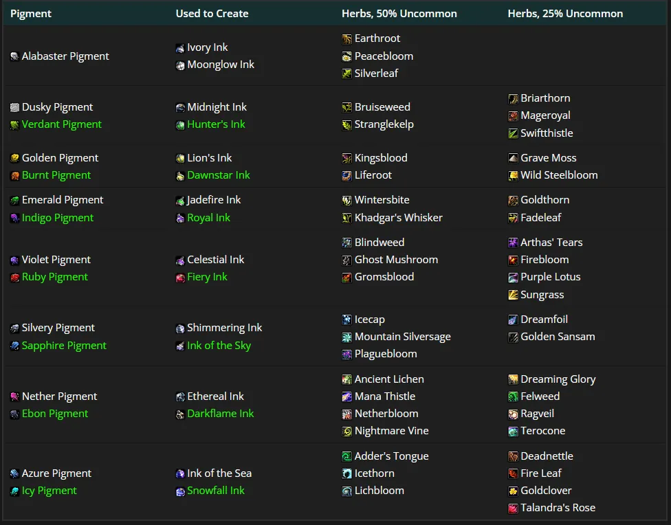

WotLK Warmane Icecrown - Inscription 1 to 450 (x3) and Bonuses
Shoulder inscriptions, pigments from milling and the full leveling route.
Inscription Bonuses
| Type | Enchant | Bonus |
|---|---|---|
| Caster (Spell Power) | Master’s Inscription of the Storm | +70 Spell Power +15 Crit |
| Healer (Spirit) | Master’s Inscription of the Crag | +70 Spell Power +8 MP5 |
| Physical DPS (AP) | Master’s Inscription of the Axe | +120 Attack Power +15 Crit |
| Tank (Stamina) | Master’s Inscription of the Pinnacle | +60 Dodge +15 Defense |
Leveling Inscription From 1 to 450
Required Materials
Parchments are sold by any Inscription vendor.
SOME CRAFTS ARE YELLOW.
YOU MIGHT NEED MORE MATERIALS THAN LISTED HERE.
GET MORE MATERIALS.
(usually add 3 or 5 for each material)
Classic
| Pigments | Inks | Parchments (Buy from Vendor) |
|---|---|---|
Alabaster Pigment: 60 Dusky Pigment: 5 Golden Pigment: 20 Burnt Pigment: 10 Emerald Pigment: 20 Indigo Pigment: 12 Violet Pigment: 6 Ruby Pigment: 8 Silvery Pigment: 54 Sapphire Pigment: 5 |
Ivory Ink: 2 Moonglow Ink: 3 Midnight Ink: 54 Lion’s Ink: 4 Jadefire Ink: 16 Celestial Ink: 24 Fiery Ink: 21 Shimmering Ink: 5 |
Light Parchment: 44 Heavy Parchment: 18 |
| TSM Shopping Strings | ||
labaster Pigment/exact/x60 Dusky Pigment/exact/x5 Verdant Pigment/exact/x2 Golden Pigment/exact/x20 Burnt Pigment/exact/x10 Emerald Pigment/exact/x20 Indigo Pigment/exact/x12 Violet Pigment/exact/x6 Ruby Pigment/exact/x8 Silvery Pigment/exact/x54 Sapphire Pigment/exact/x5 |
Ivory Ink/exact/x2 Moonglow Ink/exact/x3 Midnight Ink/exact/x54 Lion's Ink/exact/x4 Jadefire Ink/exact/x16 Celestial Ink/exact/x24 Fiery Ink/exact/x21 Shimmering Ink/exact/x5 |
|
TBC
| Pigments | Inks | Parchments (Buy from Vendor) |
|---|---|---|
52 Nether Pigment 5 Ebon Pigment |
13 Ethereal Ink | 13 Resilient Parchment |
| TSM Shopping Strings | ||
Nether Pigment/exact/x52 Ebon Pigment/exact/x5 |
Ethereal Ink/exact/x13 | |
WotLK
| Pigments | Inks | Parchments (Buy from Vendor) |
|---|---|---|
12 Azure Pigment 20 Icy Pigment |
44 Ink of the Sea 9 Snowfall Ink You will learn a random recipe at some point, you’ll have to get the material that it will require. |
97 Resilient Parchment |
| TSM Shopping Strings | ||
Azure Pigment/exact/x12 Icy Pigment/exact/x20 |
Ink of the Sea/exact/x44 Snowfall Ink/exact/x9 |
|
Pigments from Milling

Leveling 1-450
Inscription Trainer
For Inscription, you can level up from 1 to 450 with only 1 trainer : Dalaran - Professor Pallin
Classic
| Level | Craft | Q | Total Material |
|---|---|---|---|
| Learn Apprentice Inscription at 1 | |||
| 1-31 | Ivory Ink | 10 | 20 Alabaster Pigment |
| 31-37 | Scroll of Stamina | 2 | 2 Ivory Ink, 2 Light Parchment |
| 37-46 | Moonglow Ink | 3 | 6 Alabaster Pigment |
| Learn Journeyman Inscription at 50 | |||
| 46-76* | Moonglow Ink | 17 | 34 Alabaster Pigment |
| 76-82 | Midnight Ink | 5 | 5 Dusky Pigment |
| 82-85* | Armor Vellum | 2 | 2 Moonglow Ink, 2 Light Parchment |
| 85-91 | Hunter’s Ink | 2 | 2 Verdant Pigment |
| 91-100 | Weapon Vellum | 3 | 9 Midnight Ink, 6 Light Parchment |
| 100-106 | Lion’s Ink | 10 | 20 Golden Pigment |
| 106-127 | Weapon Vellum | 15 | 45 Midnight Ink, 30 Light Parchment |
| Learn Expert Inscription at 125 | |||
| 127-136 | Dawnstar Ink | 10 | 10 Burnt Pigment |
| 136-139 | Minor Inscription Research | 1 | Moonglow Ink, 2 Light Parchment |
| 139-142 | Glyph of Inner Fire | 1 | Lion’s Ink, Light Parchment |
| 142-151 | Glyph of Lightning Bolt | 3 | 3 Lion’s Ink, 3 Light Parchment |
| 151-157 | Jadefire Ink | 10 | 20 Emerald Pigment |
| 157-160 | Glyph of Righteous Defense | 1 | Jadefire Ink, Common Parchment |
| 160-166 | Glyph of Renew | 2 | 2 Jadefire Ink, 2 Common Parchment |
| 166-172 | Glyph of Shadow Bolt | 2 | 2 Jadefire Ink, 2 Common Parchment |
| 172-175 | Glyph of Overpower | 1 | Jadefire Ink, Common Parchment |
| 175-181 | Royal Ink | 12 | 12 Indigo Pïgment |
| 181-187 | Glyph of Mind Flay | 2 | 2 Jadefire Ink, 2 Common Parchment |
| 187-190 | Glyph of Frost Shock | 1 | Jadefire Ink, Common Parchment |
| 190-202 | Glyph of Revenge | 6 | 6 Jadefire Ink, 6 Common Parchment |
| Learn Artisan Inscription at 200 | |||
| 202-205 | Celestial Ink | 3 | 6 Violet Pigment |
| 205-220 | Armor Vellum II | 7 | 7 Celestial Ink, 14 Common Parchment |
| 220-226 | Glyph of Starfire | 2 | 2 Celestial Ink, 2 Heavy Parchment |
| 226-232 | Fiery Ink | 8 | 8 Ruby Pigment |
| 232-235 | Glyph of Crusader Strike | 1 | Celestial Ink, Heavy Parchment |
| 235-250 | Weapon Vellum II | 5 | 5 Fiery Ink, 5 Celestial Ink, 10 Heavy Parchment |
| 250-256 | Shimmering Ink | 27 | 54 Silvery Pigment |
| 256-262* | Weapon Vellum II | 16 | 16 Fiery Ink, 16 Celestial Ink, 32 Common Parchment |
| 262-265 | Glyph of Freezing Trap | 1 | Shimmering Ink, Heavy Parchment |
| 265-271 | Glyph of Exorcism | 2 | 2 Shimmering Ink, 2 Heavy Parchment |
| 271-277 | Glyph of Frost Strike | 2 | 2 Shimmering Ink, 2 Heavy Parchment |
| Learn Master Inscription at 275 | |||
| 277-292 | Ink of the Sky | 5 | 5 Sapphire Pigment |
TBC
| Level | Craft | Quantity | Total Material |
|---|---|---|---|
| 292-307* | Ethereal Ink | 26 | 52 Nether Pigment |
| 307-310 | Glyph of Unbreakable Armor | 1 | Ethereal Ink, Resilient Parchment |
| 310-316 | Glyph of Rune Tap | 2 | 2 Ethereal Ink, 2 Resilient Parchment |
| 316-322 | Glyph of Arcane Blast | 2 | 2 Ethereal Ink, 2 Resilient Parchment |
| 322-325 | Glyph of Sweeping Strikes | 1 | Ethereal Ink, Resilient Parchment |
| 325-331 | Darkflame Ink | 5 | 5 Ebon Pigment |
| 331-337 | Glyph of Windfury Weapon | 2 | 2 Ethereal Ink, 2 Resilient Parchment |
| 337-340 | Glyph of Seal of Command | 1 | Ethereal Ink, Resilient Parchment |
| 340-346 | Glyph of Death Strike | 2 | 2 Ethereal Ink, 2 Resilient Parchment |
| 346-352 | Glyph of Vampiric Blood | 2 | 2 Ethereal Ink, 2 Resilient Parchment |
WotLK
| Level | Craft | Q | Total Material |
|---|---|---|---|
| 352-355* | Ink of the Sea | 6 | 12 Azure Pigment |
| 355-376* | Armor Vellum III | 12 | 12 Ink of the Sea, 24 Resilient Parchment |
| 376-382* | Snowfall Ink | 10 | 20 Icy Pigment |
| 382-385* | Glyph of Quick Decay | 2 | 2 Ink of the Sea, 2 Resilient Parchment |
| 385-388 | Northrend Inscription Research | 1 | 3 Ink of the Sea, Snowfall Ink, 5 Resilient Parchment |
| 388-400* | Craft what you did discover | 10 | - |
| 397-400 | Northrend Inscription Research (Need to wait 20h) | 1 | 3 Ink of the Sea, Snowfall Ink, 5 Resilient Parchment |
| 400-415* | Weapon Vellum III | 7 | 21 Ink of the Sea, 14 Resilient Parchment |
| 415-421 | Scroll of Strength VIII | 2 | 2 Ink of the Sea, 4 Resilient Parchment |
| 421-430* | Scroll of Agility VIII | 4 | 4 Ink of the Sea, 8 Resilient Parchment |
| 430-440* | Use “Book of Glyph Mastery” and craft what you did discover | 18 | Grab materials depending on the Discovery |
| 440-450 | Runescroll of Fortitude | 8 | 8 Snowfall Ink, 40 Resilient Parchment |
Ignore
Blueish background craft are alternatives that you can use if you plan to use Method 2.
| Level | Craft | Q | Total Material |
|---|---|---|---|
| Learn Apprentice Inscription at 1 | |||
| 1-37 | Scroll of Stamina | 12 | 12 Ivory Ink, 12 Light Parchment |
| 1-31 | Ivory Ink | 10 | 20 Alabaster Pigment |
| 31-37 | Scroll of Stamina | 2 | 2 Ivory Ink, 2 Light Parchment |
| 37-52 | Armor Vellum | 5 | 5 Moonglow Ink, 10 Light Parchment |
| 37-46 | Moonglow Ink | 3 | 6 Alabaster Pigment |
| Learn Journeyman Inscription at 50 | |||
| 52-76 | Armor Vellum | 8 | 8 Alabaster Pigment, 16 Light Parchment |
| 46-76* | Moonglow Ink | 17 | 34 Alabaster Pigment |
| 76-100 | Weapon Vellum | 8 | 24 Midnight Ink, 16 Light Parchment |
| 76-82 | Midnight Ink | 5 | 5 Dusky Pigment |
| 82-85* | Armor Vellum | 2 | 2 Moonglow Ink, 2 Light Parchment |
| 85-91 | Hunter’s Ink | 2 | 2 Verdant Pigment |
| 91-100 | Weapon Vellum | 3 | 9 Midnight Ink, 6 Light Parchment |
| 100-127* | Weapon Vellum | 17 | 51 Midnight Ink, 34 Light Parchment |
| 100-106 | Lion’s Ink | 10 | 20 Golden Pigment |
| 106-127 | Weapon Vellum | 15 | 45 Midnight Ink, 30 Light Parchment |
| Learn Expert Inscription at 125 | |||
| 127-130 | Glyph of Hamstring | 1 | Lion’s Ink, Light Parchment |
| 130-136 | Glyph of Moonfire | 2 | 2 Lion’s Ink, 2 Light Parchment |
| 127-136 | Dawnstar Ink | 10 | 10 Burnt Pigment |
| 136-139 | Minor Inscription Research | 1 | Moonglow Ink, 2 Light Parchment |
| 139-142 | Glyph of Inner Fire | 1 | Lion’s Ink, Light Parchment |
| 142-151 | Glyph of Lightning Bolt | 3 | 3 Lion’s Ink, 3 Light Parchment |
| 151-157 | Glyph of Insect Swarm | 2 | 2 Jadefire Ink, 2 Common Parchment |
| 151-157 | Jadefire Ink | 10 | 20 Emerald Pigment |
| 157-160 | Glyph of Righteous Defense | 1 | Jadefire Ink, Common Parchment |
| 160-166 | Glyph of Renew | 2 | 2 Jadefire Ink, 2 Common Parchment |
| 166-172 | Glyph of Shadow Bolt | 2 | 2 Jadefire Ink, 2 Common Parchment |
| 172-175 | Glyph of Overpower | 1 | Jadefire Ink, Common Parchment |
| 175-181 | Glyph of Aimed Shot | 2 | 2 Jadefire Ink, 2 Common Parchment |
| 175-181 | Royal Ink | 12 | 12 Indigo Pïgment |
| 181-187 | Glyph of Mind Flay | 2 | 2 Jadefire Ink, 2 Common Parchment |
| 187-190 | Glyph of Frost Shock | 1 | Jadefire Ink, Common Parchment |
| 190-202 | Glyph of Revenge | 6 | 6 Jadefire Ink, 6 Common Parchment |
| Learn Artisan Inscription at 200 | |||
| 202-205 | Certificate of Ownership | 1 | 2 Celestial Ink, Common Parchment |
| 202-205 | Celestial Ink | 3 | 6 Violet Pigment |
| 205-220 | Armor Vellum II | 7 | 7 Celestial Ink, 14 Common Parchment |
| 220-226 | Glyph of Starfire | 2 | 2 Celestial Ink, 2 Heavy Parchment |
| 226-232 | Glyph of Disengage | 2 | 2 Celestial Ink, 2 Heavy Parchment |
| 226-232 | Fiery Ink | 8 | 8 Ruby Pigment |
| 232-235 | Glyph of Crusader Strike | 1 | Celestial Ink, Heavy Parchment |
| 235-250 | Weapon Vellum II | 5 | 5 Fiery Ink, 5 Celestial Ink, 10 Heavy Parchment |
| 250-256 | Shimmering Ink | 27 | 54 Silvery Pigment |
| 250-262* | Weapon Vellum II | 16 | 16 Fiery Ink, 16 Celestial Ink, 32 Common Parchment |
| 262-265 | Glyph of Freezing Trap | 1 | Shimmering Ink, Heavy Parchment |
| 265-271 | Glyph of Exorcism | 2 | 2 Shimmering Ink, 2 Heavy Parchment |
| 271-277 | Glyph of Frost Strike | 2 | 2 Shimmering Ink, 2 Heavy Parchment |
| Learn Master Inscription at 275 | |||
| 277-292 | Ink of the Sky | 5 | 5 Sapphire Pigment |
| 277-280 | Glyph of Water Mastery | 1 | Shimmering Ink, Heavy Parchment |
| 280-286 | Glyph of Disease | 1 | Shimmering Ink, Heavy Parchment |
| 286-292 | Glyph of Execution | 2 | 2 Shimmering Ink, 2 Heavy Parchment |
| Level | Craft | Q | Total Material |
|---|---|---|---|
| 292-307* | Ethereal Ink | 26 | 52 Nether Pigment |
| 307-310 | Glyph of Unbreakable Armor | 1 | Ethereal Ink, Resilient Parchment |
| 310-316 | Glyph of Rune Tap | 2 | 2 Ethereal Ink, 2 Resilient Parchment |
| 316-322 | Glyph of Arcane Blast | 2 | 2 Ethereal Ink, 2 Resilient Parchment |
| 322-325 | Glyph of Sweeping Strikes | 1 | Ethereal Ink, Resilient Parchment |
| 325-331 | Glyph of Succubus | 1 | Ethereal Ink, Resilient Parchment |
| 325-331 | Darkflame Ink | 5 | 5 Ebon Pigment |
| 331-337 | Glyph of Windfury Weapon | 2 | 2 Ethereal Ink, 2 Resilient Parchment |
| 337-340 | Glyph of Seal of Command | 1 | Ethereal Ink, Resilient Parchment |
| 340-346 | Glyph of Death Strike | 2 | 2 Ethereal Ink, 2 Resilient Parchment |
| 346-352 | Glyph of Vampiric Blood | 2 | 2 Ethereal Ink, 2 Resilient Parchment |
| 352-355 | Glyph of the Ghoul | 1 | Ethereal Ink, Resilient Parchment |
| Level | Craft | Q | Total Material |
|---|---|---|---|
| 352-355* | Ink of the Sea | 6 | 12 Azure Pigment |
| 355-376* | Armor Vellum III | 12 | 12 Ink of the Sea, 24 Resilient Parchment |
| 376-382 | Glyph of Quick Decay | 2 | 2 Ink of the Sea, 2 Resilient Parchment |
| 376-382* | Snowfall Ink | 10 | 20 Icy Pigment |
| 382-385* | Glyph of Quick Decay | 2 | 2 Ink of the Sea, 2 Resilient Parchment |
| 385-388 | Northrend Inscription Research | 1 | 3 Ink of the Sea, Snowfall Ink, 5 Resilient Parchment |
| 388-400* | Craft what you did discover | 10 | - |
| 397-400 | Northrend Inscription Research (Need to wait 20h) | 1 | 3 Ink of the Sea, Snowfall Ink, 5 Resilient Parchment |
| 400-415* | Weapon Vellum III | 7 | 21 Ink of the Sea, 14 Resilient Parchment |
| 415-421 | Scroll of Strength VIII | 2 | 2 Ink of the Sea, 4 Resilient Parchment |
| 421-430* | Scroll of Agility VIII | 4 | 4 Ink of the Sea, 8 Resilient Parchment |
| 430-440* | Use “Book of Glyph Mastery” and craft what you did discover | 18 | Grab materials depending on the Discovery |
| 440-450 | Runescroll of Fortitude | 8 | 8 Snowfall Ink, 40 Resilient Parchment |